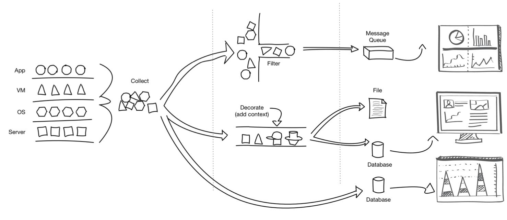

We believe the next generation of cloud computing within data centers will achieve higher density, scale, and agility in a highly automated manner.
We call this vision Intelligent Resource Orchestration (IRO) and it all starts with valuable, accurate, and consumable data from the hardware and software.
We began our journey asking ourselves “What would an operational framework focused on making the consumption of telemetry much easier look like?”
Learn more about our story.
Snap is designed to:
Empower systems to expose a consistent set of telemetry data
Simplify telemetry ingestion across ubiquitous storage systems
Improve the deployment model, packaging and flexibility for collecting telemetry
Allow flexible processing of telemetry data on agent (e.g. machine learning)
Provide powerful clustered control of telemetry workflows across small or large clusters
Simplified Workflow
Achieve a single extensible flow from raw information to valuable automation. Start with data collection at all layers, then transform the data with basic filtering or add information for context, and finish by publishing the processed data to one or more platforms.

Plugin Architecture
Snap is designed to collect, process, and publish data with a pluggable architecture. Users can mix and match functionality based on need using three types of plugins (collectors, processors, and publishers).
Collect telemetry data once via plugins
Filter, alter, or append metadata as many times as you need via plugins
Publish data as many times as you need via plugins
Dynamic Control
Dynamic plugin operations means loading, updating, and unloading plugins without restarting snap or extra configuration management.
While dynamic updates ensures simple and secure bug fixes, security patching, and improved accuracy in production.
Scale with Ease
Use the snap tribe clustering feature to simplify cluster configuration management and scale with less operational cost.